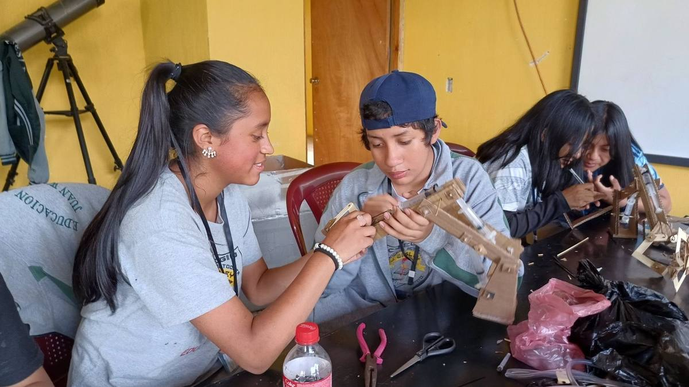
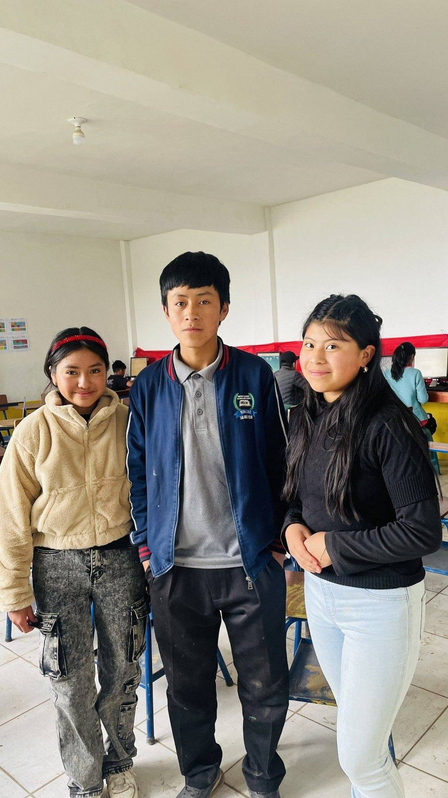
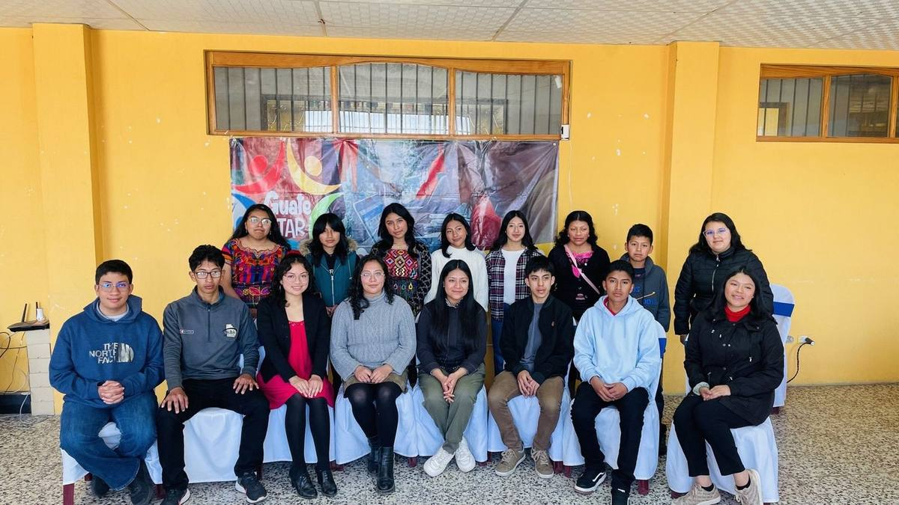

Technology & connectivity
232 computers delivered in 2026
Computers, internet antennas and the Chispa platform so children can keep learning in their own village.
Learn moreTotonicapán, Guatemala· supporting highland children since 1952

Learning together in the community, every week. The first stage of the GuateStar pathway.

Club Extra brings girls and boys together in learning groups in their own community, where each child moves at their own pace through educational and technology activities.
Children don’t need to leave their village to learn well. The program complements school with academic support, technology and mentorship, and builds values: love, integrity, innovation, collaboration and hope.
It all began ten years ago with seven children in Chuixacol. In 2026, 534 children from 285 families enrolled across eight communities.
Some communities opened after June, so attendance is still growing.
GuateStar designed this five-step method of its own, and Club Extra activities are built on it. Children don’t just receive information: they connect with a problem, solve it, experiment, argue for their ideas and improve what they did.

| Site | Enrolled | Weekly attendance | Families |
|---|---|---|---|
| Nimasac · Middle school | 114 | 89 | 52 |
| Los Itzep | 93 | 71 | 45 |
| Patulup | 85 | 71 | 43 |
| Nimasac · Elementary | 75 | 57 | 26 |
| Pueblo Viejo | 50 | 46 | 26 |
| Salitre | 49 | 46 | 21 |
| Juan Wesley | 30 | 26 | 15 |
| Esmirna | No record | 31 | 16 |
| San Bartolo | No record | 6 | 4 |
| Total | 534 | 443 | 285 |
Attendance is a weekly average after June, not counting weeks without Club Extra. Total enrollment includes one site without weekly records.

When Nimasac families learned about Club Extra, they asked for their elementary school children to join too. Twenty spots were opened, and more than 40 children showed up the first Saturday.
Read the story232 computers delivered in 2026
Computers, internet antennas and the Chispa platform so children can keep learning in their own village.
Learn more
80 scholarship students in 2026
Scholarships that let students keep studying from preschool all the way to college or a technical program.
Learn more
14 young people completed the program
16 weeks of business challenges that help each young person take the final step toward college.
Learn more
17 young people serving every week
Those who start as participants become volunteers and then facilitators: leadership learned by serving.
Learn more
See the impact of your support, give today or join us as a volunteer. Every decision counts.